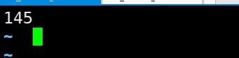

vim 1.txt #打开一个文件 ps aux | grep vim #在新终端中查看vim的进程号 [root@master ~]# ps aux | grep vim root 1565 0.0 0.2 149264 4960 pts/0 S+ 09:46 0:00 vim 1.txt ls -d /proc/1565 #查看 ls /proc/1565 #查看进程1565的信息
ls -l /proc/1565/fd #里面的数字是链接
echo 123 > /dev/pts/0 #在新窗口里面输入这个 旧窗口里面会出现：

输出重定向的类型
正确输出
1> 相当于 > #会覆盖内容
1>> 相当于 >> #追加内容
错误输出
2> #错误输出，会覆盖内容
2>> #错误输出，追加内容
同时输出正确和错误信息
&> # &号和>号不能分开，否则会当成后台运行
ls /home /aaaaa &> 2.txt ls /home /aaaaa &> /dev/null #什么信息都不输出，相当于丢进了垃圾桶回收站
Changes will remain in memory only, until you decide to write them. Be careful before using the write command.
Device does not contain a recognized partition table Building a new DOS disklabel with disk identifier 0xe216c3dc.
Command (m for help): 输入字母n，回车 Partition type: p primary (0 primary, 0 extended, 4 free) e extended Select (default p): 输入p划分主分区，MBR可以划出4个分区 Partition number (1-4, default 1): #选择分区号 输入1回车 First sector (2048-10485759, default 2048): #选择起始扇区，从哪个地方开始划分，每次选择默认都是在上一个分区的末尾开始。单位是一个扇区的大小即一个扇区或者512字节，0-2047放着磁盘的分区表，记录磁盘的分区信息。 直接回车就好 Using default value 2048 Last sector, +sectors or +size{K,M,G} (2048-10485759, default 10485759): #分区到哪里结束，选择磁盘分区结束的扇区，即分区大小，可以写上面的数字，也可以写+2G之类的直接设置分区的大小，会帮我们自动计算，如果直接输入回车那就是将剩下的所有内存都给这个分区。 输入+2G回车 Partition 1 of type Linux and of size 2 GiB is set
Command (m for help): #会话模式进入最后一步，已经完成2G大小分区记录，但为生效。 输入w保存分区信息 The partition table has been altered!
Disk /dev/sdb: 5368 MB, 5368709120 bytes, 10485760 sectors #磁盘名字 大小MB 大小字节为单位 包含多少个扇区 Units = sectors of 1 * 512 = 512 bytes # 一个扇区的大小 Sector size (logical/physical): 512 bytes / 512 bytes I/O size (minimum/optimal): 512 bytes / 512 bytes Disk label type: dos 磁盘标签disk operation system(dos) Disk identifier: 0xe216c3dc 磁盘标记符：类似于身份证
Device Boot Start End Blocks Id System /dev/sdb1 2048 4196351 2097152 83 Linux
创建（格式化）文件系统
创建文件系统使得文件可以很好的访问和调用
mkfs.ext4 /dev/sdb1 #创建（格式化）/dev/sdb1 的文件系统，准备格式化 mkfs -t ext4 /dev/sdb1 #效果同上 # make # file # system # extend4 扩展文件系统到第四代，是文件系统的类型。 # /dev/sdb1 第二块串口硬盘的第一个分区 [root@localhost ~]# mkfs.ext4 /dev/sdb1 mke2fs 1.42.9 (28-Dec-2013) Filesystem label= OS type: Linux Block size=4096 (log=2) #一个块的大小 Fragment size=4096 (log=2) Stride=0 blocks, Stripe width=0 blocks 131072 inodes, 524288 blocks 26214 blocks (5.00%) reserved for the super user First data block=0 Maximum filesystem blocks=536870912 16 block groups 32768 blocks per group, 32768 fragments per group 8192 inodes per group Superblock backups stored on blocks: 32768, 98304, 163840, 229376, 294912
Allocating group tables: done Writing inode tables: done Creating journal (16384 blocks): done Writing superblocks and filesystem accounting information: done
先删除第4个分区 Partition type: p primary (3 primary, 0 extended, 1 free) e extended Select (default e): e 输入e选择扩展分区 Selected partition 4 First sector (5015552-10485759, default 5015552): 回车 Last sector, +sectors or +size{K,M,G} (5015552-10485759, default 10485759): 回车 剩下的所有空间都要在扩展分区里面 Command (m for help): p #p打印分区信息
Disk /dev/sdb: 5368 MB, 5368709120 bytes, 10485760 sectors Units = sectors of 1 * 512 = 512 bytes Sector size (logical/physical): 512 bytes / 512 bytes I/O size (minimum/optimal): 512 bytes / 512 bytes Disk label type: dos Disk identifier: 0xe216c3dc
Device Boot Start End Blocks Id System /dev/sdb1 2048 4196351 2097152 83 Linux /dev/sdb2 4196352 4605951 204800 83 Linux /dev/sdb3 4605952 5015551 204800 83 Linux /dev/sdb4 5015552 10485759 2735104 5 Extended Command (m for help): n All primary partitions are in use Adding logical partition 5 First sector (5017600-10485759, default 5017600): 现在输入n就默认划分逻辑分区了 我现在划了3个主分区和一个扩展分区，扩展分区包括4个逻辑分区 Device Boot Start End Blocks Id System /dev/sdb1 2048 4196351 2097152 83 Linux /dev/sdb2 4196352 4605951 204800 83 Linux /dev/sdb3 4605952 5015551 204800 83 Linux /dev/sdb4 5015552 10485759 2735104 5 Extended /dev/sdb5 5017600 5427199 204800 83 Linux /dev/sdb6 5429248 5838847 204800 83 Linux /dev/sdb7 5840896 6250495 204800 83 Linux /dev/sdb8 6252544 10485759 2116608 83 Linux
交换分区管理Swap
简介
其就是一个普通的硬盘分区
作用：“提升”内存的容量，防止OOM(out of memory)，防止内存溢出
内存可以把数据放到swap分区，热点数据。虚拟内存。
swap大小
推荐：设置swap分区为内存的两倍
生产中
大于4G而小于46G内存的系统，最小需要4G交换空间
大于16G而小于64G内存的系统，最小需要8G交换空间
大于64G而小于256G内存的系统，最小需要16G交换空间
####查看交换分区
free -m #用兆来表示 [root@localhost ~]# free -m total used free shared buff/cache available Mem: 1819 224 1431 9 163 1444 Swap: 2047 0 2047
增加swap分区
将/dev/sdc磁盘划分2G分区为例，方法同上 Command (m for help): n Partition type: p primary (0 primary, 0 extended, 4 free) e extended Select (default p): p Partition number (1-4, default 1): 1 First sector (2048-10485759, default 2048): Using default value 2048 Last sector, +sectors or +size{K,M,G} (2048-10485759, default 10485759): +2G Partition 1 of type Linux and of size 2 GiB is set
Command (m for help): t
划分分区后，将类型设置为82，按t进入
Command (m for help): t Selected partition 1 Hex code (type L to list all codes): L #L 列出所有的类型 需要的是82 Linux swap Hex code (type L to list all codes): 82 Changed type of partition ‘Linux’ to ‘Linux swap / Solaris’ 3. partprobe /dev/sdc #刷新 4. mkswap /dev/sdc1 #格式化 [root@localhost ~]# mkswap /dev/sdc1 Setting up swapspace version 1, size = 2097148 KiB no label, UUID=609db5b5-5db4-41d7-a6d3-2c7cde1dd0b8 #UUID磁盘编号 5. swapon /dev/sdc1 #挂载 #swapoff /dev/sdc1 #卸载 6. free -m #检查
[root@localhost ~]# free -m total used free shared buff/cache available Mem: 1819 225 1430 9 163 1443 Swap: 4095 0 4095